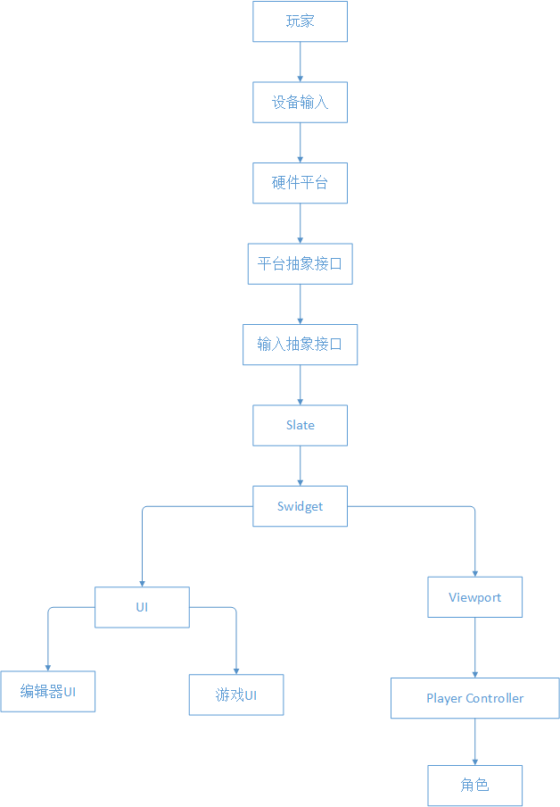
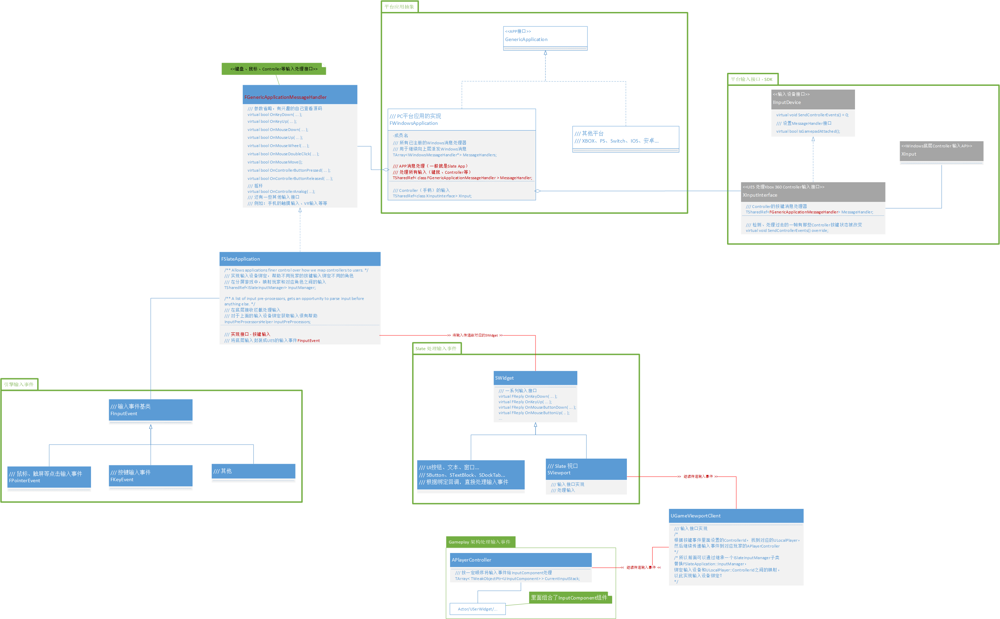

# 一、Input 流程图

# 二、引擎底层输入架构

# I. 架构简介
- 为引擎抽象一层输入接口（FGenericApplicationMessageHandler），五花八门的输入接口应有尽有。
- 通过硬件 SDK API 检测输入，并调用引擎对应的输入接口（FGenericApplicationMessageHandler）。
- 将输入封装为引擎输入事件（FInputEvent）。
- 层层传递、分流、再传递！
# II. 输入设备分配实现
- 背景介绍：前一个项目要做本地双人分屏游戏，然后就会出现多输入设备对应多个玩家的情况。
- 问题：玩家应该使用哪个输入设备？怎么实现设备分配？
- 解决方法：
- 虚幻引擎已经给每个输入的设备分配了 Id（FInputDeviceId）。
- ISlateInputManager 正是管理输入设备和玩家之间的映射关系，在这里可以将输入设备 Id 映射成 ControllerId。继承它、实现它、替换默认的对象。
- Input 在 UGameViewportClient 会通过上面映射的 ControllerId 找到对应的 PlayerController，并将输入传递给该 Controller。
- 怎么检测输入映射？继承一个 InputPreProcessorsHelper 子类，实例化并注册进 SlateApplication 中拦截输入，
第一次检测特定的按键输入（比如：Enter 键），然后将设备分配给玩家 1（设置 InputManager 映射），同理第二次的输入时检测的设备分配给玩家 2。
最后取消注册 InputPreProcessorsHelper。
# 三、引擎 GamePlay 输入架构

# I. 架构简介
- InputAction 和 InputMappingContext 中都组合有 InputTrigger/InputModifier
- InputComponent 配置 InputAction 和游戏行为的映射。
- InputMappingContext 配置 InputAction 和按键 Key 映射，并交给 PlayerInput（UEnhancedPlayerInput）处理。
- PlayerInput 缓存 PlayerController 接收到的输入并处理（InputTrigger/InputModifier），将有效的输入通过 InputMapping 查找 InputAction，
然后遍历 InputComponent 栈通过 InputAction 查找绑定的游戏行为委托，最后执行委托。
# II. 处理流程
- PlayerController 接收到的输入都缓存在 PlayerInput 的 KeyStateMap 中。
- 每帧 PlayerController 都会有规则的构建 InputComponent 栈（APlayerController::BuildInputStack）。
InputComponent 入栈顺序：（栈底）Control 的 Pawn->LevelBlueprint->PlayerController->Input-Enable Actor（栈顶）。 - 紧接着 PlayerController 调用 PlayerInput::ProcessInputStack 处理 InputComponent，查找绑定的按键是否被触发（KeyStateMap 中查找），
如果被触发，就处理该按键对应的 InputMappingContext->InputTrigger/InputMappingContext ==> InputAction->InputTrigger/InputMappingContext。 - 注意：所有的处理后的数据都会被应用 TMap<TObjectPtr< const UInputAction>, FInputActionInstance> ActionInstanceData 中，汇总所有处理结果。
- 根据 ActionInstanceData 处理结果，查找有效的 InputAction，然后根据有效的 InputAction 找到 InputComponent 中绑定的回调，执行回调！
# III. 问题答疑
- 为什么说 InputAction 更像 Id？
// 虚幻4 InputComponent->BindAxis("MoveForward", this, &AXuanXueCharacter::MoveForward); //虚幻5 这里的MoveAction就是UInputAction对象的实例，是不是匹配了上面的"MoveForward"字符串 EnhancedInputComponent->BindAction(MoveAction, ETriggerEvent::Triggered, this, &AXuanXueCharacter::Move);